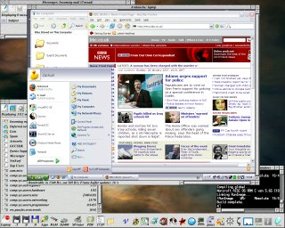

Everything here, unless explicitly mentioned, should run on all versions of RISC OS from 3.10 onwards, and be 26/32 bit compatible. Some of the things here require other bits of software, there is a collection of links to these on the resources page.
A VNC client allowing remote control of computers over a local network or the internet. You need to be running a VNC server on the remote machine.
Features include:
Optionally requires ConfiX (for hotlist/choices), BypassAlt (fixes Alt and Command key problems so that things like Alt-Enter or Alt-C (Command-C for mac users) work as expected - see below to download) and SysLog. Download Avalanche.
A utility module which allows applications to disable the usual behaviour of the Alt keys. So, when enabled, Alt-C will generate a wimp key event for 'C' rather than '©'. The Alt keys can still be interrogated using INKEY. Requires RISC OS 3.5+ Download BypassAlt.
A DeviceFS (i.e. RISC OS 5) USB driver for Ethernet devices.
The driver supports concurrent use of numerous different types of USB Ethernet device. To support configuring hot-plugged devices reliably the DCI interface name (ej0, ej1, etc.) can be configured by MAC, Vendor/Product or USB bus location, using system variables.
As of version 0.14, EtherUSB is now part of RISC OS Open and is maintained in their GitLab repository.
A write only DeviceFS driver directing all output to SysLog. Lets SysLog be used with standard file access calls, for example using fprintf() from C, BPUT from BASIC or any command line utility by using stream redirection.
For example: *Modules { > Devices#Log=Test:$.SysLog }
This is particularly useful for redirecting the error streams of applications as SysLogDevice allows an arbitrary number of open streams to any log.
Requires SysLog. Download SysLogDevice.
A small module which can redefine the key codes returned by keyboard or mouse drivers before they reach the kernel, allowing keys and mouse buttons to be swapped around. Requires RISC OS 3.5+ Download KeyMapper.